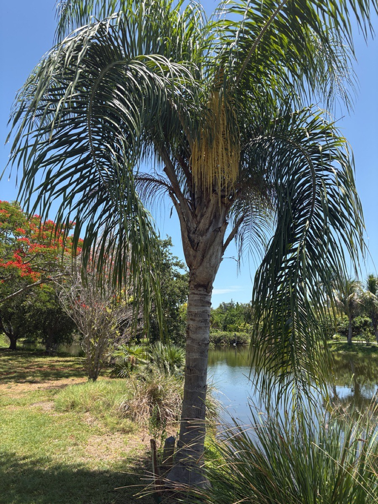

- A single fruit cluster can weigh over 100 pounds, generating thousands of aggressive volunteer seedlings that displace native understory plants. That's partly why UF/IFAS classifies this species as potentially invasive in Florida.
- The species name honors Nikolay Rumyantsev (1754–1826), Russia's Foreign Minister and the financier of the first Russian circumnavigation of the globe. A botanist on that voyage collected the palm in Brazil in 1815 and named it for his patron.
- One of the most widely planted ornamental palms on earth, it has cycled through three different scientific names since 1822.
- A lethal fungal disease called Fusarium wilt (Fusarium oxysporum f. sp. palmarum) has spread across the southern half of Florida and kills queen palms with no cure available. It can be transmitted from tree to tree on contaminated pruning tools.
Native to the Atlantic Forest biome and adjacent grasslands of South America — specifically southern and eastern Brazil, Paraguay, Uruguay, and northeastern Argentina. It was introduced to Florida and the rest of the subtropical world purely as an ornamental, and has been planted so widely across central and southern Florida that it has begun escaping into natural areas.
It is not native to North America in any form.
- Queen palm arrived in the global horticultural trade under the name Cocos plumosa, a tag that stuck for decades after seed from Brazil reached English nurseries in the 1820s. The palm eventually flowered at Kew Gardens in 1859, confirming it was something distinct, and the director Joseph Dalton Hooker formally published the name.
- By the late 1960s taxonomists had moved it into the genus Arecastrum, and in 1968 that genus was folded into Syagrus — where it sits today, though genetic work suggests even that placement may not be final.
- In its native South American range, the queen palm grows along watercourses and gallery forests from near sea level to about 1,200 meters, thriving in regions with distinct wet and dry seasons. Here in Florida it is a landscape transplant that has proven very comfortable — perhaps too comfortable.
- It volunteers readily from seed in disturbed hammocks and woodlands across the central and southern peninsula, and as of 2024 is listed as a Category II invasive species by the Florida Invasive Species Council (FISC, formerly FLEPPC), meaning it has increased in abundance with demonstrated potential to displace native understory plants.
- In the landscape, queen palm's Achilles' heel in Florida is Fusarium wilt. This lethal fungal disease blocks the palm's water-conducting tissue, causing rapid decline with no known cure. Nutrient management is an additional hurdle: queen palms in Florida soils are chronically deficient in magnesium and manganese, requiring specialized palm fertilizers to prevent visible decline.
The large, fleshy orange fruits are actively sought by birds and mammals, which consume the pulp and disperse the seeds away from the parent tree. In its native South American range, documented fruit-eaters include toucans, tanagers, jays, and chachalacas; in Florida, resident frugivores such as mockingbirds, blue jays, raccoons, and squirrels make use of fallen fruit.
This dispersal efficiency is precisely what gives the species its invasive foothold in natural areas — seeds arrive in hammocks and woodlands already pre-processed by wildlife.
Flowers are pollinated primarily by bees and beetles. Documented visitors include honeybees (Apis mellifera), stingless bees of the tribe Meliponini, and orchid bees (Euglossini), all attracted by nectar; beetles contribute significantly as well, with wind playing only a minor supplementary role.
The large inflorescences produced in spring and summer offer a meaningful pollen and nectar resource for generalist pollinators, though the species provides no documented larval host value for Florida butterflies or moths.
Seed only — no suckering or clonal vegetative spread. Each tree is a single-trunked individual. Prolific seed production is the hallmark of this species: a single fruit cluster can contain over 1,000 seeds. Seeds are dispersed primarily by birds and mammals that consume the fruit pulp.
Large, branched inflorescences of small cream-colored flowers emerge from within the canopy in spring and early summer. The palm is monoecious — male and female flowers occur on the same inflorescence, with male flowers opening first.
Round to slightly elongated drupes, ¾ to 1 inch long, hanging in large clusters that can weigh over 100 pounds. Fruits ripen from green through yellow to bright orange, typically ripening in fall and winter. Each fruit contains a single hard seed enclosed in sweet, fibrous orange flesh.
Solitary, upright, gray trunk 8–15 inches in diameter, ringed with prominent circular leaf scars and occasionally showing swellings or bulges. Self-cleaning in most conditions — dead fronds drop on their own, though in Florida's humid summers they may persist and require trimming.
Pinnate (feather) fronds 8–15 feet long, glossy bright green, with soft, arching leaflets arranged in multiple ranks along the rachis. A mature tree typically carries 7–15 fronds in a graceful, drooping canopy.
Start with the trunk: smooth and gray, ringed with evenly spaced leaf scars, sometimes with slight swellings — a clean architectural silhouette unlike any Florida native palm. Look up into the canopy for the soft, arching feather-fronds; unlike the stiff fronds of a sabal palm, these droop and flex in the breeze.
In spring and early summer, watch for the enormous cream-colored flower clusters emerging from within the crown. By fall and winter the same stalks carry the fruit — bright orange clusters that can weigh more than 100 pounds.
Check the ground beneath the tree: fallen orange fruit and sprouting seedlings are the reliable calling card of a queen palm.
The ripe fruit flesh is technically edible and sweet, with a flavor resembling a mix of plum and banana. However, a high fiber-to-seed ratio makes it a poor forager's crop with very little meat. It is not cultivated for food in Florida. Do not confuse with the highly toxic sago palm (Cycas revoluta).
Not considered toxic to humans.
According to the ASPCA, the fruit is non-toxic to dogs; however, the hard seeds are a severe choking hazard, and the dense, fibrous fruit interiors pose a physical intestinal obstruction risk if swallowed in quantity. Keep pets away from fallen accumulations.
NOMENCLATURE: This palm has carried three scientific names in common use. First described as Cocos romanzoffiana in 1822 by Chamisso; long sold in horticulture as Cocos plumosa (a name formally published by Hooker at Kew in 1860); reclassified as Arecastrum romanzoffianum in the late 1960s; and finally subsumed into Syagrus in 1968 by Glassman.
The name Arecastrum romanzoffianum still appears in older Florida references. The species epithet honors Nikolay Rumyantsev, who financed the Russian scientific voyage during which the palm was first collected in Brazil in 1815.
FUSARIUM WILT: A lethal vascular disease caused by Fusarium oxysporum f. sp. palmarum affects queen palms throughout southern Florida. There is no cure. The disease is readily spread by contaminated pruning equipment; any crew pruning multiple palms should sterilize tools between trees. Early symptoms include one-sided chlorosis of older fronds with a reddish-brown stripe on the petiole.
Death typically follows within months to a year of symptom onset.
NUTRITION: Queen palms in Florida landscapes are chronically deficient in magnesium and manganese. A palm-specific slow-release fertilizer (8-2-12 + 4Mg formulation) is recommended by UF/IFAS for maintenance of healthy canopy color and vigor.


- © Randall Carter (CC-BY-NC), via iNaturalist